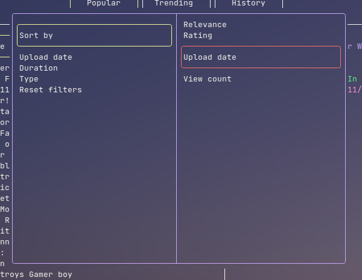
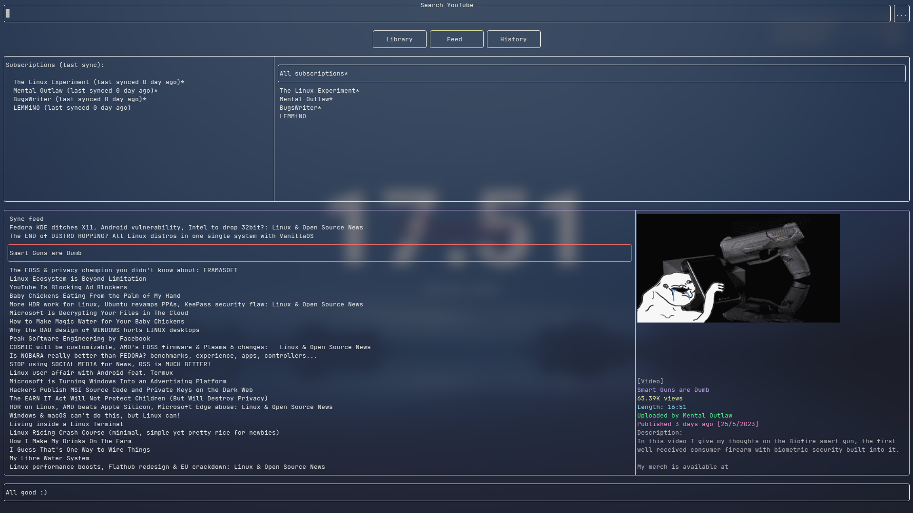

Basic usage
Here is a basic how-to guide on the TUI.
Cursor
The cursor can be moved using arrow keys, or Vim keybindings (hjkl).

The item with the cursor hovering will have a red outline.
Everything here refers to the latest default config, including the keybindings.
| Function | Key(s) |
|---|---|
| Select | Enter |
| Deselect | Esc |
| Cursor up | Up arrow / k |
| Cursor down | Down arrow / j |
| Cursor left | Left arrow / h |
| Cursor right | Right arrow / l |
| Previous page | Backspace / Alt + Left arrow |
| First page history | Home |
| Clear page history | End |
| Paste from clipboard | Ctrl + V |
| Next/previous entry on search and command | Ctrl + up/down arrow |
| Next song | Ctrl + Shift + Right arrow |
| Seek audio | Ctrl + left/right arrow |
| Pause/resume audio | Space |
| Enter command mode | : |
| Quit | q |
Selection
Selecting an item allows you to move the cursor within that item, to select an item, press Enter.
When nothing is selected, you can move the cursor between items, to deselect from an item, hit Esc.
Searching
Type the search query when the search bar and press Enter, use arrow keys to move the cursor around.
To apply search filters, select the button with 3 dots (...) to the right of the search bar, hit enter to start modifying and enter again to save. Pressing Esc should reload the current search page to apply the filters.

You may use
Ctrl + Up/Down arrowto cycle through previously searched queries (when focused on the search bar).
Playing media with embedded player
By default, running any "play video" options in video or playlist view will open a new mpv player window.
While any "play audio" options will start playing the audio in the embedded audio player,
- seek and rewind using
Ctrl + Left/Right arrow - skip with
Ctrl + Shift + Right arrow - pause and resume with space
Playing videos and playlists externally
You can also play audio and videos externally.
This part assumes that you use
mpvas your video player,konsoleas your terminal emulator,yt-dlpas your YouTube video downloader, andfirefoxas your browser.If that is not the case, you can learn how to change that in the custom commands section.
You can press keybindings like Shift + A to run a command which opens a new terminal screen, and in that terminal screen it runs an mpv command to play the media.
Feeds
Feeds allows you to view updates from subscribed channels, similar to how subscriptions works on YouTube.

Command mode
Command mode is like that of Vim, it can be started by pressing : when nothing is selected.
More about commands in the next chapter.
Command bindings
Keys can be bind to a command, more about it in the next chapter.
For example Ctrl + F launches your web browser.
Buttons
Buttons are similar to hyperlinks, it allows you to navigate between pages.
Mouse click control
Mouse click controls has been added, you can now use your mouse to navigate around the TUI. Here are the general rules:
- Clicking an item moves the cursor to that item, clicking again selects the item
- Clicking on buttons, or items on a list has the same effect as pressing
Enteron them - Clicking outside a popup closes the popup
However, there are some downsides to not using your keyboard.
- Cannot move up or down to items not on screen in a list (you can do that with
UporDown arrow) - Cannot access function keys like
BackspaceorQ
Library
Items can be bookmarked and saved to library, they can also be saved to be viewed offline.